Parque Nacional Baritú
Baritú conserva más de 72.000 hectáreas de la ecorregión Yungas, cerca de la frontera con Bolivia. Su acceso restringido y la continuidad de sus selvas favorecen la conservación de una biodiversidad notable.
Ecosistema y paisaje
Las Yungas se organizan en pisos de vegetación según la altura y la humedad: selvas en las zonas inferiores y medias, y bosques montanos en las mayores alturas. El clima es subtropical, con una estación seca y lluvias estivales abundantes.
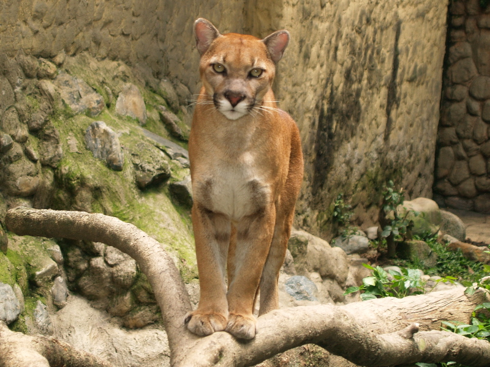
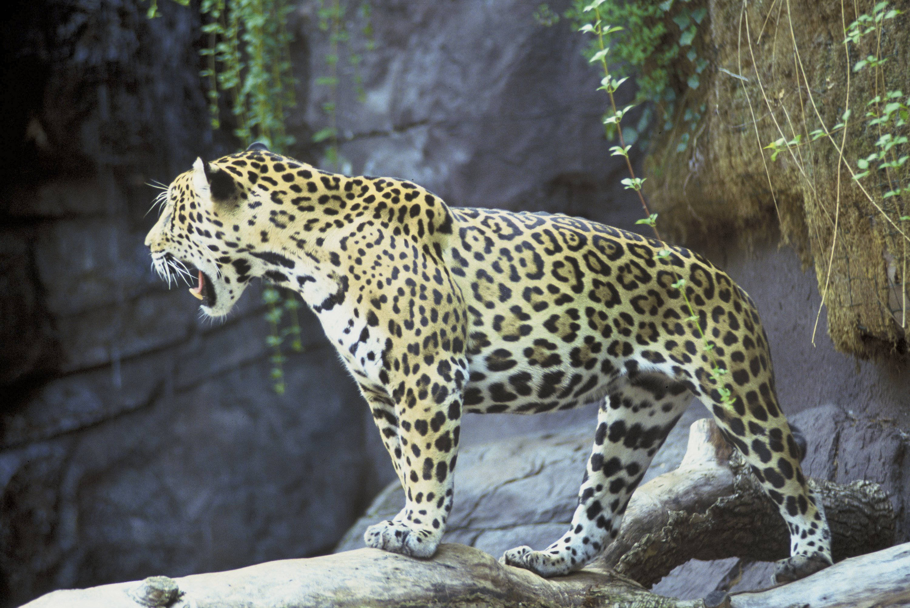
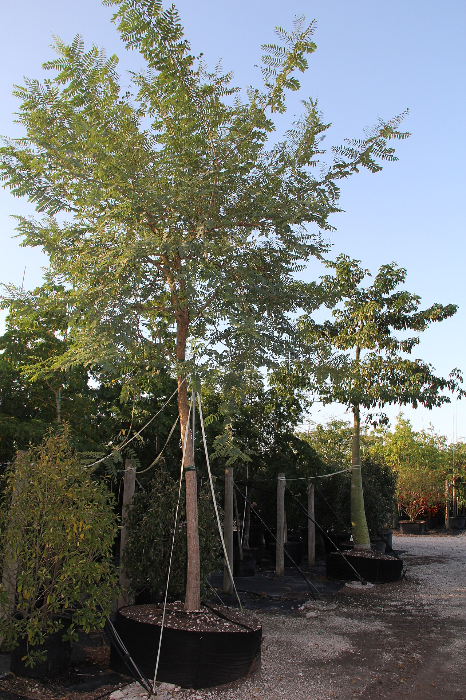
Flora destacada
- Tipa
- Pacará
- Cebil
- Jacarandá o tarco
- Nogal criollo
Fauna destacada
- Yaguareté
- Puma
- Tapir o anta
- Corzuela
- Mono caí
Parque Nacional El Rey
Creado en 1948, El Rey conserva más de 44.000 hectáreas de Yungas, Chaco Seco y la transición entre ambos ambientes. Sus valles, ríos y serranías forman un mosaico de hábitats.
Ecosistema y paisaje
La vegetación cambia con la altura e incluye bosque chaqueño serrano, selva de transición, selva montana, selva de mirtáceas, bosques de pino del cerro, aliso y queñoa, y pastizales serranos.
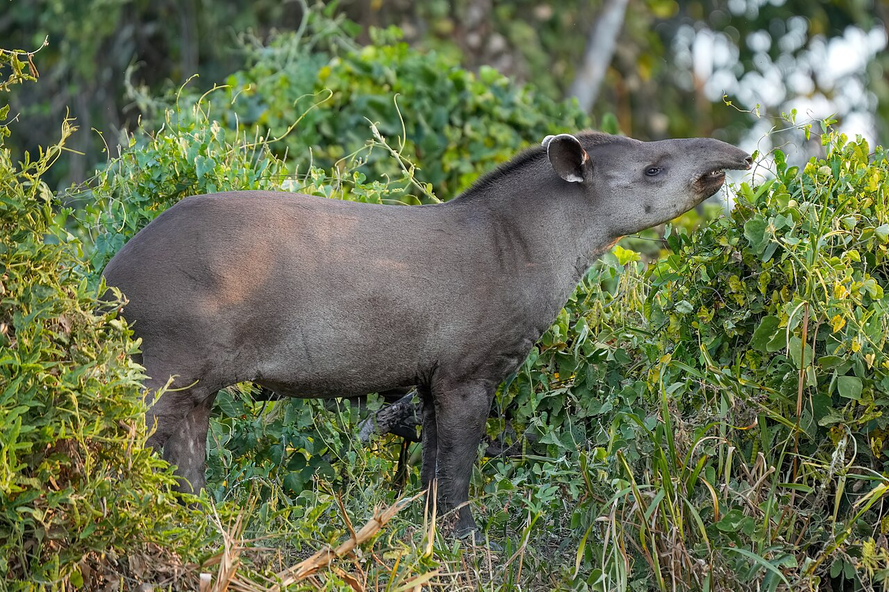
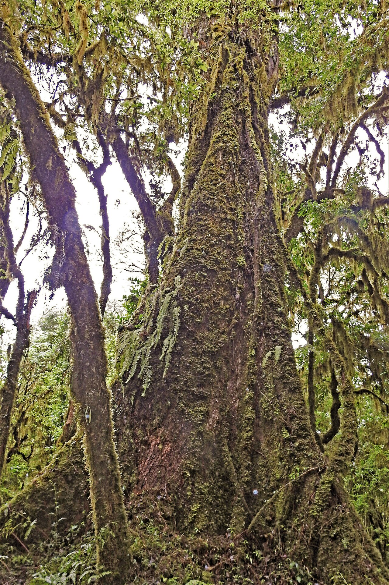
Flora destacada
- Cedro tucumano
- Tipa
- Tarco
- Nogal criollo
- Palo blanco
Fauna destacada
- Tapir o anta
- Puma
- Corzuela parda
- Pecarí de collar
- Pava de monte común
Parque Nacional Aconquija
Aconquija conserva unas 94.000 hectáreas de Yungas y Altos Andes. Protege el relicto más austral de las Yungas, ambientes de alta montaña y las nacientes de los ríos Jaya y Las Pavas.
Ecosistema y paisaje
El paisaje cambia desde la selva y el bosque montano hasta los pastizales y ambientes altoandinos. La variación de altura produce numerosos microambientes y reúne más de 900 especies nativas de flora y fauna.
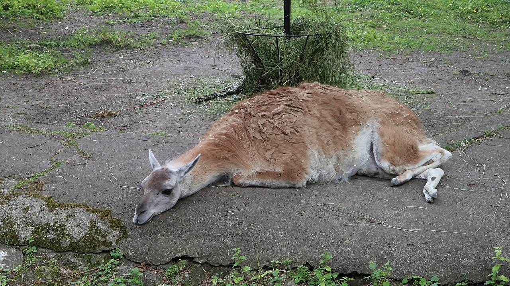
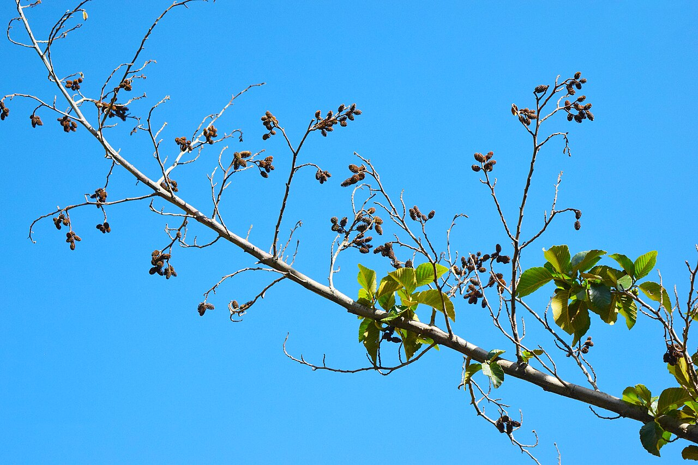
Flora destacada
- Aliso del cerro
- Cebil
- Tipa
- Tarco
- Queñoa
Fauna destacada
- Guanaco
- Lobito de río
- Gato andino
- Ranita montana
- Ocelote
Parque Nacional Los Cardones
Los Cardones conserva más de 64.000 hectáreas de Altos Andes, Puna, Monte de Sierras y Bolsones y un pequeño sector de Yungas. Su nombre se debe a la abundancia de cardones o pasacanas.
Ecosistema y paisaje
Predominan el clima árido, las estepas altoandinas, las vegas de altura, los cardonales y los bosques de churqui en sectores con disponibilidad de agua. La diversidad de alturas crea ambientes contrastantes.
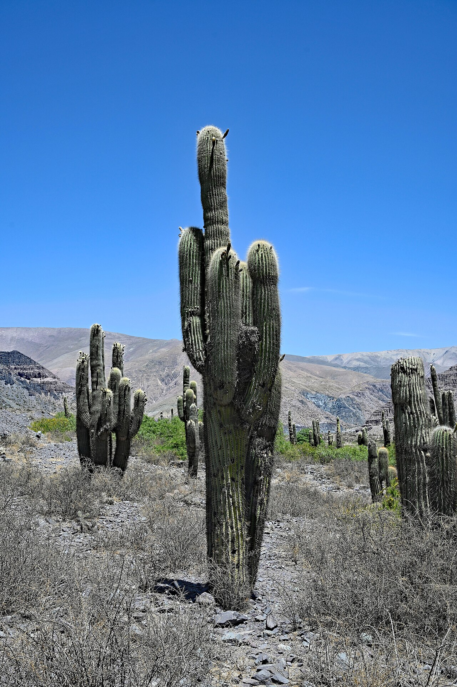
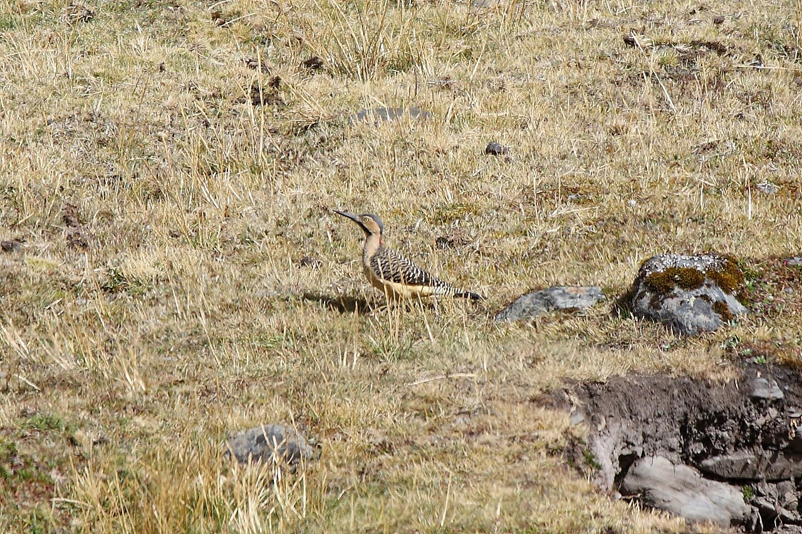
Flora destacada
- Cardón o pasacana
- Churqui
- Cardoncito
- Jarilla
- Cortadera
Fauna destacada
- Gato del pajonal
- Monterita serrana
- Zorro colorado
- Guanaco
- Yasto o carpintero de las piedras
Parque Nacional Copo
Copo protege más de 118.000 hectáreas de Chaco Seco y es uno de los últimos grandes reductos del quebrachal chaqueño. Conserva especies amenazadas en un ambiente afectado históricamente por la explotación forestal.
Ecosistema y paisaje
El Chaco Seco presenta bosques espinosos de quebracho y otros árboles chaqueños. También hay pastizales en antiguos cauces, una estación seca marcada y escasez de cuerpos de agua.
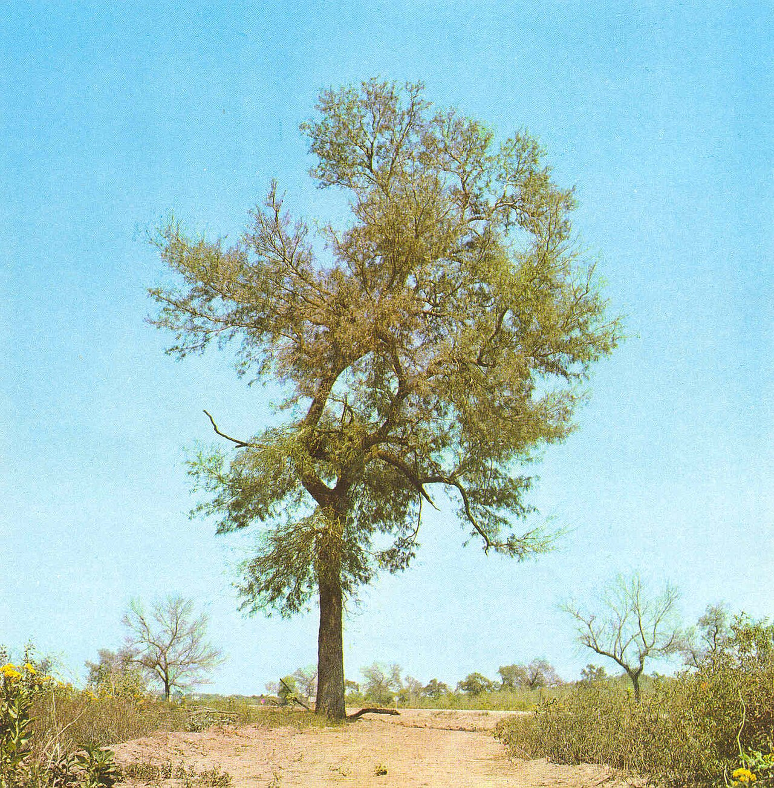
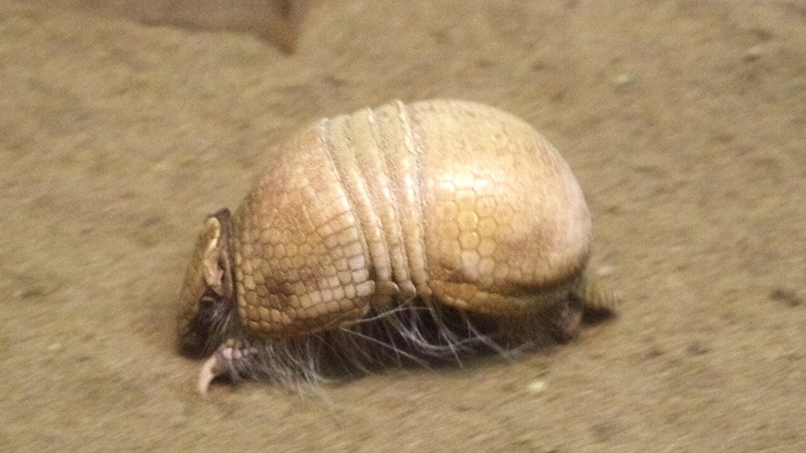
Flora destacada
- Quebracho colorado santiagueño
- Quebracho blanco
- Itín
- Guayacán
- Mistol
Fauna destacada
- Yaguareté
- Tatú carreta
- Chancho quimilero
- Oso hormiguero grande
- Águila coronada
Parque Nacional Calilegua
Calilegua conserva más de 76.000 hectáreas de Yungas en las laderas orientales de las sierras de Calilegua. Forma parte de la Reserva de Biosfera de las Yungas y es un refugio fundamental para especies amenazadas.
Ecosistema y paisaje
Sus pisos altitudinales incluyen selva pedemontana, selva montana, bosque montano, pastizal montano o de neblina y prados altoandinos. El clima es subtropical serrano, con estación seca invernal.
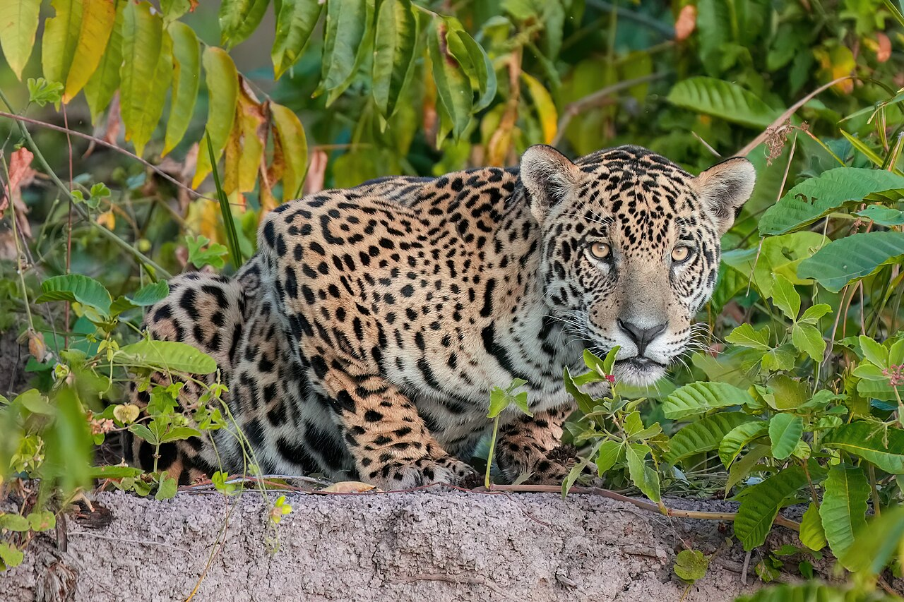
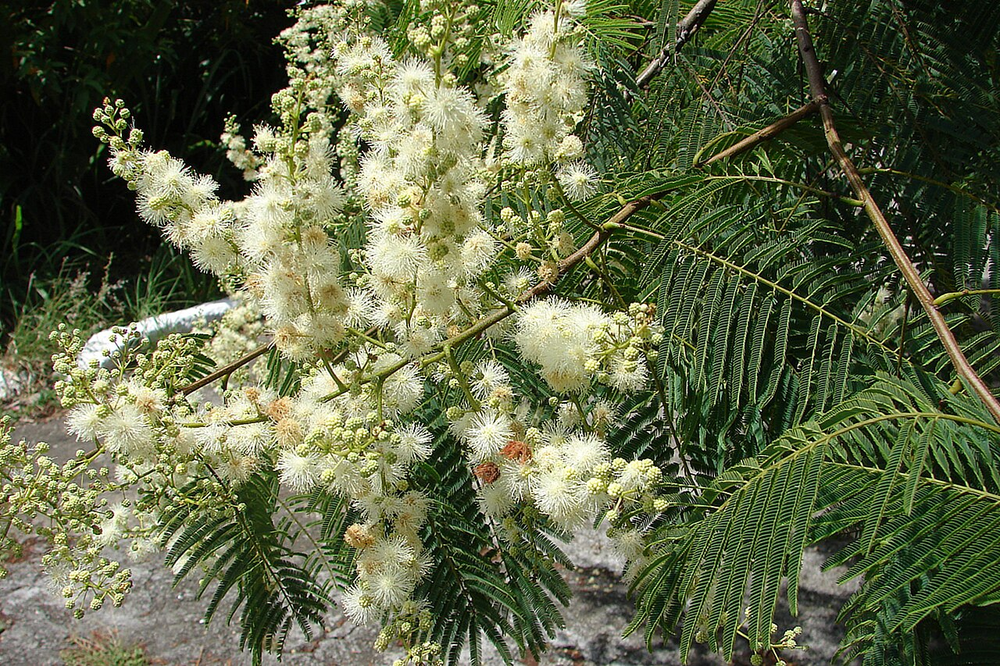
Flora destacada
- Cebil colorado
- Tipa blanca
- Lapacho rosado
- Cedro colla
- Pino del cerro
Fauna destacada
- Yaguareté
- Taruca o huemul del norte
- Águila poma
- Ardilla roja
- Mono caí de las Yungas